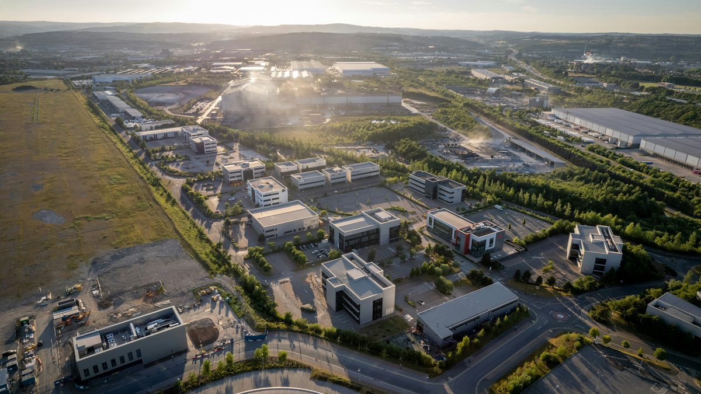

The industry just announced the end of the one-building data center.
Nobody mentioned how anyone crosses the new one.
Gigawatt-scale campuses are the new unit of digital infrastructure — hundreds of acres, multiple buildings, thousands of workers on site for years. The power got planned. The cooling got planned. The financing got planned. Moving people across the site is still assumed to be feet.
In July 2026, a data center trade publication ran a headline that doubled as an obituary: "The Era of One-Building Data Centers Is Ending." It landed alongside a broader framing the industry press has been sharpening all spring — that gigawatt-scale campuses are accelerating, and fast. (Data Centers Dot Com)
The industry gave the shift a name and a thesis. The single building is obsolete. The unit of digital infrastructure is now the campus — hundreds of acres, multiple buildings, a gigawatt or more of power, consolidated into one integrated site. One analysis called it "the industrialization of digital infrastructure."
We've been making a version of this argument for a year, across every vertical we serve, in a piece called "The Properties Got Bigger. The Plan Didn't." The built environment keeps crossing a size threshold beyond which a property can no longer be crossed comfortably on foot — and the plan for moving people through it never gets updated to match.
The data center industry just crossed that threshold in public, on purpose, and gave it a name.
So let's look at the campus they're describing. Because somebody has to move people across it.
672 acres. Four buildings. 5,000 workers. 200 parking stalls.
Vantage Data Centers broke ground in December 2025 on its Lighthouse campus in Port Washington, Wisconsin — a $15 billion-plus development that is now one of the largest economic development projects in state history. It's part of the OpenAI–Oracle–SoftBank Stargate initiative. (Engineering News-Record; Capitol Lien)
The numbers describe the new normal the trade headlines are talking about:
The first phase spans 672 acres — part of a broader 1,900-acre site. Four single-story data center buildings totaling roughly 2.5 million square feet. Up to 902 megawatts of IT capacity, with the buildings drawing a total of 1.3 gigawatts of power. Vantage will develop about 500 of the 672 acres, preserving the rest as natural space. (Engineering News-Record; Data Centre Magazine)
At peak construction, the development is expected to employ 4,000 to 5,000 workers, over a three-year build. (Data Center Dynamics; Vantage Data Centers)
And here's the detail that says everything. When Vantage itemized the planned infrastructure for the campus, the list included, in its own words, "parking lots with up to 200 stalls, generators, transformers, utility buildings and dry coolers." (Engineering News-Record)
They itemized the parking stalls. They itemized the transformers and the dry coolers. What the infrastructure list does not include is how a workforce of up to 5,000 people gets from those stalls — or from the overflow lots and laydown yards that a build this size always requires — to four buildings spread across 500 developed acres, every shift, every day, for three years.
That's not a criticism of Vantage. It's the industry-wide blind spot, showing up in a single planning document. The power gets a line item. The cooling gets a line item. The people-moving does not — because "the workers walk" has never needed a line item before.
At 500 developed acres, it does now.
This is the whole point of "The Properties Got Bigger"
We've documented the internal-distance problem at data centers before, and the numbers have never been theoretical.
At DataBank's 292-acre Red Oak campus in Texas, the VP of Construction stated it plainly: workers lose two hours daily just commuting to and from active work zones within the site — a figure we broke down in "4,000 Workers. One Campus. Zero Transit System." At a loaded labor rate, that internal commute is one of the largest uncounted line items on the entire job.
Lighthouse is more than twice the acreage of Red Oak, with more workers.
And Red Oak isn't the ceiling anymore either. This month alone: Crusoe and Lancium announced a 1.0-gigawatt campus in Childress, Texas. Meta is building "Hyperion," a supercluster it says will scale to 5 gigawatts. Damac has broken ground on ten new sites in five months. U.S. data center construction starts hit an estimated $77.7 billion in 2025 — a 190% year-over-year increase. (DataCentre News; Equipment World)
Every one of these projects is the same shape: a footprint measured in hundreds or thousands of acres, a workforce measured in thousands, and a people-moving plan measured in — nothing. The industry scaled the power, the cooling, the financing, and the square footage by an order of magnitude. The plan for how a human being gets from the parking stall to Building 4 stayed exactly where it was when a data center was one building and a small lot.
As we put it in the original piece: the properties got bigger, and the plan didn't. Data centers just became the clearest example in the country.
Building a gigawatt-scale campus?
FlexTram deploys turnkey, redeployable transit for data center construction and industrial campuses — moving workers from parking and laydown areas to active work zones across large sites, then relocating to the next project. Equipment rentals, full-service operations with trained drivers, and program efficiency studies available.
The build is temporary. The pattern isn't.
There's a wrinkle specific to data centers that makes the case sharper, not weaker.
Data centers draw public criticism for creating "a relatively small number of jobs" once operational. (AOL / The Columbus Dispatch) Lighthouse follows the pattern exactly: up to 5,000 workers during the three-year build, then roughly 1,000 permanent jobs once the campus goes live. (Data Center Dynamics)
That profile — an enormous, temporary construction workforce followed by a lean permanent one — is precisely the profile that permanent transit infrastructure can't serve. You cannot justify building a fixed people-mover for a 5,000-worker surge that lasts three years and then largely evaporates. Which is exactly why the internal commute gets ignored: nobody wants to pour concrete for a road system the finished campus won't need.
But the surge is real while it lasts, and it repeats at every campus a developer builds. Vantage has parallel projects in Texas and Ohio. The Stargate initiative is a $500 billion, multi-year, multi-site build-out. The construction-phase people-moving problem isn't a one-time cost at one site — it's a recurring condition across an entire portfolio of gigawatt campuses, each one hitting peak workforce, then handing the baton to the next.
That's the argument for turnkey, redeployable transit rather than permanent infrastructure. A system that deploys for the three-year build, moves workers from the lots and laydown yards to the active buildings across 500 acres, and then relocates to the next campus when this one tops out. The same deployment model we bring to a festival that exists for one weekend or a stadium that surges eight times a year — applied to a construction site that surges for three years and then goes quiet. As we detailed in "You're Offering Per Diem, Housing, and a Signing Bonus," in a labor market where every one of these builds is competing for the same skilled trades, the daily experience of the site — including whether workers walk a mile across active construction or ride — is part of how you keep the crew you fought to hire.
Somebody has to cross it
The one-building era is over. The industry said so itself, in print, this month. The campus won — hundreds of acres, multiple buildings, a gigawatt of power, one integrated site.
Every one of those campuses is a planning document with a line for the transformers, a line for the generators, a line for the dry coolers, a line for the 200 parking stalls — and no line for the several thousand people who have to get from the stall to the building, across 500 acres, every day the site is under construction.
The power got planned. The cooling got planned. The people-moving is still assumed to be feet.
The industry just declared the single building obsolete. The single thing it forgot to scale is the plan for crossing what replaced it.
— The FlexTram Team
Frequently asked questions
How big are the new gigawatt-scale data center campuses?
The industry has shifted from single buildings to integrated campuses spanning hundreds of acres. Vantage Data Centers' Lighthouse campus in Port Washington, Wisconsin — part of the OpenAI–Oracle–SoftBank Stargate initiative — broke ground in December 2025 as a $15 billion-plus development. Its first phase covers 672 acres of a broader 1,900-acre site, with four single-story buildings totaling roughly 2.5 million square feet, up to 902 megawatts of IT capacity, and 1.3 gigawatts of total power draw. Vantage will develop about 500 of the 672 acres. It is one of the largest economic development projects in Wisconsin history.
How many workers does a gigawatt data center campus employ during construction?
Vantage's Lighthouse campus is expected to employ 4,000 to 5,000 workers at peak over a roughly three-year build, then about 1,000 permanent jobs once operational. That profile — a large temporary construction workforce followed by a lean permanent one — is typical of hyperscale campuses. At DataBank's 292-acre Red Oak campus in Texas, the VP of Construction stated that workers lose up to two hours a day just commuting to and from active work zones inside the site.
Why is moving workers across a data center construction site a problem?
Gigawatt campuses now span 500 or more developed acres, with parking lots, overflow lots, and laydown yards that can sit far from the active buildings. When Vantage itemized the Lighthouse infrastructure, the list included parking lots with up to 200 stalls, generators, transformers, utility buildings, and dry coolers — but nothing for how a workforce of up to 5,000 crosses the site every shift. "The workers walk" was never a line item because it never needed to be. At 500 developed acres, the internal commute becomes one of the largest uncounted labor costs on the job.
Why not build permanent people-moving infrastructure at a data center campus?
The workforce profile makes permanent infrastructure hard to justify: an enormous construction surge of up to 5,000 workers for about three years, then a lean permanent staff of roughly 1,000. Nobody wants to pour concrete for a road or transit system the finished campus won't need. That is exactly the case for turnkey, redeployable transit — a system that deploys for the multi-year build, moves workers from the lots and laydown yards to the active buildings, and then relocates to the next campus when this one tops out. The construction-phase people-moving problem is a recurring condition across an entire portfolio of gigawatt campuses, not a one-time cost at one site.
Can FlexTram provide transit for data center construction campuses?
Yes. FlexTram deploys turnkey, redeployable transit systems for data center construction and industrial campuses — moving workers from parking and laydown areas to active work zones across large sites, then relocating to the next project. Vehicles run on gravel and compacted dirt, and routes can be re-cut as the build sequence moves. Equipment rentals, full-service operations with trained drivers, and program efficiency studies are available. It is the same deployment model FlexTram brings to festivals and stadiums, applied to a construction site that surges for three years and then goes quiet.
Related reading
The power got planned. The cooling got planned. The people-moving is still feet.
FlexTram deploys turnkey, redeployable transit for data center construction and industrial campuses — moving workers from parking and laydown areas to active work zones across large sites, then relocating to the next project. Equipment rentals, full-service operations with trained drivers, and program efficiency studies available.